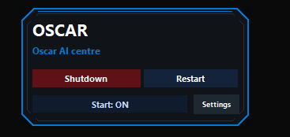
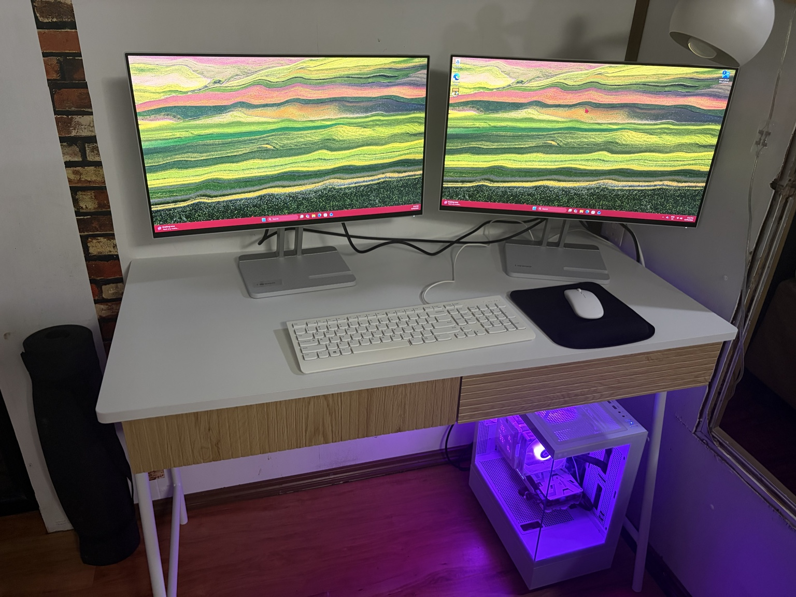

About Olos AI
Olos AI is being built around a simple belief:
AI should help people improve their daily lives without turning them into the product.
Most digital tools today are built around accounts, subscriptions, cloud dependency, tracking, and platforms the user does not truly control. Olos AI is being built in the opposite direction.
Local-first.
Privacy-first.
Useful before flashy.
Owned by the person using it.
The Oscar vision
Oscar is the long-term vision behind Olos AI: a private, modular AI assistant designed to run on hardware the user controls.
The goal is not to build another chatbot in a browser tab.
The goal is to build a personal AI system that can grow over time into a practical life operating layer: helping with organisation, planning, learning, daily tasks, personal records, local knowledge, small business support, and eventually deeper modules across health, wealth, automation, and mentorship.
Oscar is not being built as one giant all-or-nothing launch.
It is being built one useful step at a time.
Why local-first matters
Cloud AI is powerful, and it will still have a place. But not everything should need to leave your machine.
A personal assistant should be able to help with personal information without automatically sending everything through someone else's servers. Local-first design means putting the user's device, files, settings, and choices at the centre.
Where cloud tools are useful, they should be optional.
Where local tools can do the job, they should stay local.
That is the direction Olos AI is taking.
Starting small with Olos AI Pocket Tools

Before the full Oscar system arrives, Olos AI is releasing small practical utilities under the Olos AI Pocket Tools line.
These are simple tools designed to solve real computer problems without accounts, tracking, analytics, or unnecessary cloud dependency.
The first public release is Desktop ID Widget, a free local Windows utility for people working across multiple computers, remote desktop sessions, home labs, development machines, media PCs, office systems, or remote workstations.
Its purpose is simple:
Know where you are before you shut something down.
It shows the machine identity clearly on the desktop and adds safer shutdown and restart controls with a warning countdown, abort option, and deliberate confirmation step.
Small tool.
Real problem.
No spying.
That is the starting point.
Oscar-USB
The next major step is Oscar-USB, the portable starting point for the wider Oscar ecosystem.
Oscar-USB is intended to make local-first AI more accessible by allowing useful tools and assistant functions to run from a portable setup rather than requiring a complicated installation or expensive dedicated hardware from day one.
The direction is practical:
Use what you already have where possible.
Start with older or lower-spec machines where possible.
Avoid forcing people into unnecessary hardware upgrades.
Let the system grow as the user's needs grow.
Not everyone has a powerful AI workstation.
Some people have an older laptop, a mini PC, a spare office machine, a home lab box, or a machine that would otherwise be retired. Oscar-USB is part of the plan to give that kind of hardware a second life where possible.
The long-term aim is to let people start small and upgrade only when they actually need to.
Built for real people, not just enthusiasts
Olos AI is being designed for people who want useful technology without needing to become system administrators, cloud engineers, or AI researchers.
That includes:
- People managing daily life and digital clutter.
- People working across multiple computers.
- Small business owners who need practical support.
- Developers and home lab users who value local control.
- Families who want safer, more private tools.
- People who want AI help without surrendering every personal detail to a platform.
The technology may be complex underneath, but the user experience should become simpler over time.
Future direction
The long-term Oscar ecosystem may include modules for:
- Personal organisation.
- Email and communication support.
- Shopping lists and to-dos.
- Document and file assistance.
- Local knowledge management.
- Planning and scheduling.
- Health records and wellness tracking.
- Finance, budgeting, and asset tracking.
- Small business support.
- Automation.
- Learning and mentorship.
- Local AI model management.
- Secure personal memory.
Not every module will arrive at once.
Not every module will be right for every user.
Oscar is intended to grow modularly, so users can add the tools they want, when they want them.
The hardware path

Olos AI is also exploring future hardware options.
The first stage is software: free tools, local utilities, and Oscar-USB.
Over time, the project may grow toward dedicated hardware options for users who want a cleaner, more powerful, ready-to-run local AI system.
That could eventually include small home systems, business systems, or purpose-built Oscar hardware.
But the principle stays the same:
The user should remain in control.
What Olos AI is not
Olos AI is not being built as a hype machine.
It is not here to promise magic.
It is not here to replace human judgement, professional advice, or personal responsibility.
It is not here to collect as much data as possible and call that innovation.
Olos AI is being built to make useful tools that respect the person using them.
The principle
Useful tools.
Local-first design.
Privacy by default.
No unnecessary accounts.
No tracking.
No spying.
No nonsense.
Olos AI starts small because small useful things are the right foundation for something larger.
Oscar is coming.
One practical step at a time.